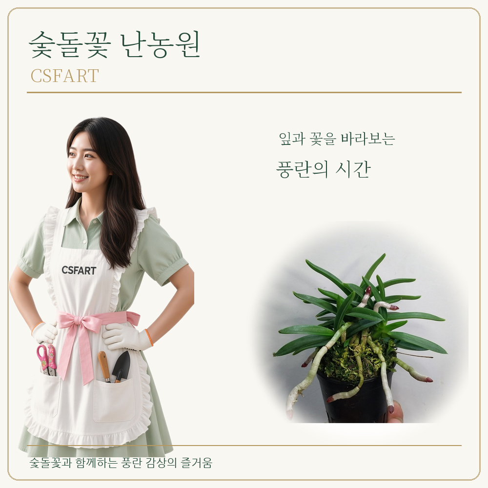

CSFART ORCHID COLLECTION · 적화계 풍란
뇌산(雷山) 0001
적화(赤花) 계열 · 중형 엽성 · 니근 · 니축
20,000원
단정한 잎의 선과 니근(泥根)·니축(泥軸), 월형(月型) 붙음매가 특징인 뇌산 풍란입니다. 적화 계열의 화색도 감상 포인트입니다.
구매와 결제는 각 판매처에서 진행됩니다. 배송·재고 조건은 판매처에서 확인하세요.
뇌산의 잎과 뿌리 살펴보기
뇌산의 네 가지 매력
중형 엽성 · 니축(泥軸) · 니근(泥根) · 적화(赤花)
풍란의 잎과 뿌리에 담긴 특징
중형 엽성 — 잎이 단정하게 뻗는 균형 잡힌 자태를 감상할 수 있습니다.
니축(泥軸) — 축에서 나타나는 고유한 색과 모습이 특징입니다.
니근(泥根) — 뿌리 끝의 붉은 기운도 감상의 즐거움을 더합니다.
월형(月型) 붙음매 — 잎의 붙음매에 나타나는 품종 특징입니다.
뇌산의 단정한 엽성과 뿌리
실사와 예(藝) 확대 설명
니근과 뿌리끝
뇌산 품종의 적화 감상
뇌산의 꽃은 꽃대와 거(距)에도 붉은 기운이 도는 적화계의 매력이 있습니다. 꽃 사진은 품종의 화색을 감상하기 위한 구성입니다.
풍란 기본 관리

뇌산 0001 구매하기
적화계 풍란 · 20,000원
구매와 결제는 각 판매처에서 진행됩니다. 배송·재고 조건은 판매처에서 확인하세요.